pcaExplorer User Guide
Federico Marini
Institute of Medical Biostatistics, Epidemiology and Informatics (IMBEI), Mainzmarinif@uni-mainz.de
Harald Binder
Institute of Medical Biostatistics, Epidemiology and Informatics (IMBEI), Mainz6 November 2021
Source:vignettes/pcaExplorer.Rmd
pcaExplorer.RmdAbstract
pcaExplorer provides functionality for interactive visualization of RNA-seq datasets based on Principal Components Analysis. Such methods allow for quick information extraction and effective data exploration. A Shiny application encapsulates the whole analysis, and is developed to become a practical companion for any RNA-seq dataset. This app supports reproducible research with state saving and automated report generation.
Package: pcaExplorer
Authors: Federico Marini [aut, cre] (https://orcid.org/0000-0003-3252-7758)
Version: 2.21.0
Compiled date: 2021-11-06
Last edited: 2019-02-26
License: MIT + file LICENSE
Getting started
pcaExplorer is an R package distributed as part of the Bioconductor project. To install the package, start R and enter:
if (!requireNamespace("BiocManager", quietly=TRUE))
install.packages("BiocManager")
BiocManager::install("pcaExplorer")To install pcaExplorer with all its dependencies (i.e. also the ones listed in the Suggests: field of the DESCRIPTION file, which include the dataset from the airway package used as a demo), use this command instead:
BiocManager::install("pcaExplorer", dependencies = TRUE)If you prefer, you can install and use the development version, which can be retrieved via Github (https://github.com/federicomarini/pcaExplorer). To do so, use:
library("devtools")
install_github("federicomarini/pcaExplorer")Once pcaExplorer is installed, it can be loaded by the following command.
Introduction
pcaExplorer is a Bioconductor package containing a Shiny application for analyzing expression data in different conditions and experimental factors.
It is a general-purpose interactive companion tool for RNA-seq analysis, which guides the user in exploring the Principal Components of the data under inspection.
pcaExplorer provides tools and functionality to detect outlier samples, genes that show particular patterns, and additionally provides a functional interpretation of the principal components for further quality assessment and hypothesis generation on the input data.
Moreover, a novel visualization approach is presented to simultaneously assess the effect of more than one experimental factor on the expression levels.
Thanks to its interactive/reactive design, it is designed to become a practical companion to any RNA-seq dataset analysis, making exploratory data analysis accessible also to the bench biologist, while providing additional insight also for the experienced data analyst.
Starting from development version 1.1.3, pcaExplorer supports reproducible research with state saving and automated report generation. Each generated plot and table can be exported by simple mouse clicks on the dedicated buttons.
Citation info
If you use pcaExplorer for your analysis, please cite it as here below:
citation("pcaExplorer")
To cite the package 'pcaExplorer' in publications use:
Federico Marini, Harald Binder (2019). pcaExplorer: an R/Bioconductor
package for interacting with RNA-seq principal components URL
http://bioconductor.org/packages/pcaExplorer/,
https://doi.org/10.1186/s12859-019-2879-1 doi:
10.1186/s12859-019-2879-1, 10.18129/B9.bioc.pcaExplorer
A BibTeX entry for LaTeX users is
@Article{,
title = {pcaExplorer: an R/Bioconductor package for interacting with RNA-seq principal components},
journal = {BMC Bioinformatics},
author = {Federico Marini and Harald Binder},
volume = {20},
number = {1},
pages = {331},
year = {2019},
month = {Jun},
day = {13},
doi = {10.1186/s12859-019-2879-1},
url = {http://bioconductor.org/packages/pcaExplorer/},
}Launching the application
After loading the package, the pcaExplorer app can be launched in different modes:
pcaExplorer(dds = dds, dst = dst), whereddsis aDESeqDataSetobject anddstis aDESeqTransformobject, which were created during an existing session for the analysis of an RNA-seq dataset with the DESeq2 package.pcaExplorer(dds = dds), whereddsis aDESeqDataSetobject. Thedstobject can be automatically computed upon launch, choosing between rlog transformation, variance stabilizing transformations, or shifted logarithm transformation (with pseudocount = 1).pcaExplorer(countmatrix = countmatrix, coldata = coldata), wherecountmatrixis a count matrix, generated after assigning reads to features such as genes via tools such asHTSeq-countorfeatureCounts, andcoldatais a data frame containing the experimental covariates of the experiments, such as condition, tissue, cell line, run batch and so on. If the data is provided in this way, the user can click on the “Generate the dds and dst objects” button to complete the setup and enable the subsequent steps in the other panels.pcaExplorer(), and then subsequently uploading the count matrix and the covariates data frame through the user interface. These files need to be formatted as tab, semicolon, or comma separated text files, all of which are common formats for storing such count values.
Additional parameters and objects that can be provided to the main pcaExplorer function are:
pca2go, which is an object created by thepca2gofunction, which scans the genes with high loadings in each principal component and each direction, and looks for functions (such as GO Biological Processes) that are enriched above the background. The offlinepca2gofunction is based on the routines and algorithms of the topGO package, but as an alternative, this object can be computed live during the execution of the app withlimmaquickpca2go(which relies on thegoanafunction provided by the limma package). Although this likely provides more general (and probably less informative) functions, it is a good compromise for quickly obtaining a further data interpretation.annotation, a data frame object, withrow.namesas gene identifiers (e.g. ENSEMBL ids) identical to the row names of the count matrix orddsobject, and an extra columngene_name, containing e.g. HGNC-based gene symbols. This can be used for making information extraction easier, as ENSEMBL ids (a usual choice when assigning reads to features) do not provide an immediate readout for which gene they refer to. This can be either passed as a parameter when launching the app, or also uploaded as a text file (either tab, comma, or semicolon-separated). The package provides two functions,get_annotationandget_annotation_orgdb, as a convenient wrapper to obtain the updated annotation information, respectively frombiomaRtor via theorg.XX.eg.dbpackages.
How to provide your input data in pcaExplorer
pcaExplorer supports a number of file formats when uploading the data via the file input widgets. Starting from version 2.9.5, we added functionality to select the separator character for each of the uploadable files. An information box is also shown by clicking on the question mark icon in the Data upload panel, with detailed information (text, as well as screenshots of valid input files) on the format specification.
In general, pcaExplorer requires by default tab separated files:
- the
countmatrix: contains the expression matrix, with one gene per row and one sample per column; the first column should contain the gene identifiers, and the header (first row) specifies the sample names. - the
coldata: one sample per row, and one experimental covariate per column. Row names should be specified in the first column, and have to match the column names of thecountmatrix. Column names will contain the specific experimental covariates. - the
annotation(optional): one gene per row, and one identifier type per column. Gene identifiers in the first column are identical to the row names of thecountmatrixorddsobjects. At least an extra columngene_name, containing e.g. HGNC-based gene symbols, needs to be provided.
Up and running with pcaExplorer
We recommend users to switch to the dedicated vignette, entitled “Up and running with pcaExplorer”.
This document describes a use case for pcaExplorer, based on the dataset in the airway package.
The controls sidebar
Most of the input controls are located in the sidebar, some are as well in the individual tabs of the app. By changing one or more of the input parameters, the user can get a fine control on what is displayed.
App settings
Here are the parameters that set input values for most of the tabs. By hovering over with the mouse, the user can receive additional information on how to set the parameter, with tooltips powered by the shinyBS package.
- x-axis PC - Select the principal component to display on the x axis
- y-axis PC - Select the principal component to display on the y axis
- Group/color by - Select the group of samples to stratify the analysis. Can also assume multiple values.
- Nr of (most variant) genes - Number of genes to select for computing the principal components. The top n genes are selected ranked by their variance inter-samples
- Alpha - Color transparency for the plots. Can assume values from 0 (transparent) to 1 (opaque)
- Labels size - Size of the labels for the samples in the principal components plots. This parameter also controls the size of the gene labels, which are displayed in the Genes View once the user has brushed an area in the main plot.
- Points size - Size of the points to be plotted in the principal components plots
- Variable name size - Size of the labels for the genes PCA - correspond to the samples names
- Scaling factor - Scale value for resizing the arrow corresponding to the variables in the PCA for the genes. It should be used for mere visualization purposes
- Color palette - Select the color palette to be used in the principal components plots. The number of colors is selected automatically according to the number of samples and to the levels of the factors of interest and their interactions
- Plot style for gene counts - Plot either boxplots or violin plots, with jittered points superimposed
The task menu
The task menu, accessible by clicking on the cog icon in the upper right part of the application, provides two functionalities:
-
Exit pcaExplorer & savewill close the application and store the content of theinputandvaluesreactive objects in two list objects made available in the global environment, calledpcaExplorer_inputs_YYYYMMDD_HHMMSSandpcaExplorer_values_YYYYMMDD_HHMMSS -
Save State as .RDatawill similarly storeLiveInputsandr_datain a binary file namedpcaExplorerState_YYYYMMDD_HHMMSS.Rdata, without closing the application
The app panels
The pcaExplorer app is structured in different panels, each focused on a different aspect of the data exploration.
Most of the panels work extensively with click-based and brush-based interactions, to gain additional depth in the explorations, for example by zooming, subsetting, selecting. This is possible thanks to the recent developments in the shiny package/framework.
The available panels are described in the following subsections.
Data Upload
These file input controls are available when no dds or countmatrix + coldata are provided. Additionally, it is possible to upload the annotation data frame. If the objects are already passed as parameters, or after they have been successfully uploaded, a brief overview/summary for them can be displayed, by clicking on each respective action button.

This panel is where you can perform the preprocessing steps on the data you uploaded/provided:
- compose the
ddsobject (if you providedcountmatrixandcoldata) - normalize the expression values (using the robust method proposed by Anders and Huber in the original DESeq manuscript)
- compute the variance stabilizing transformed expression values (stored in the
dstobject).
As a note regarding the normalization procedure: the normalization method (implemented in estimateSizeFactors) relies on the hypothesis that most of the genes are not differentially expressed across experimental groups, and this holds true for the majority of scenarios. The DESeqDataSet object, which pcaExplorer takes as main data container, can still accommodate sample (and gene) specific normalization factors. Should this assumption be violated, users can pre-compute these factors and store them in the input dds object.
Instructions
This is where you might be reading a version of the “Up and running with pcaExplorer” vignette. Additionally, you can easily reach the fully rendered vignettes, either installed locally, or directly from the Bioconductor package page.

Counts Table
Interactive tables for the raw, normalized or transformed (rlog, variance stabilized, or shifted log) counts are shown in this tab. The user can also generate a sample-to-sample correlation scatter plot with the selected data.

Data Overview
This panel displays information on the objects in use, either passed as parameters or generated from the count matrix provided. Displayed information comprise the design metadata, a sample to sample distance heatmap, the number of million of reads per sample and some basic summary for the counts.

Samples View
This panel displays the PCA projections of sample expression profiles onto any pair of components, a scree plot, a zoomed PCA plot, a plot of the genes with top and bottom loadings. Additionally, this section presents a PCA plot where it is possible to remove samples deemed to be outliers in the analysis, which is very useful to check the effect of excluding them. If needed, an interactive 3D visualization of the principal components is also available.

Genes View
This panel displays the PCA projections of genes abundances onto any pair of components, with samples as biplot variables, to identify interesting groups of genes. Zooming is also possible, and clicking on single genes, a boxplot is returned, grouped by the factors of interest. A static and an interactive heatmap are provided, including the subset of selected genes, also displayed as (standardized) expression profiles across the samples. These are also reported in datatable objects, accessible in the bottom part of the tab.

GeneFinder
The user can search and display the expression values of a gene of interest, either by ID or gene name, as provided in the annotation. A handy panel for quick screening of shortlisted genes, again grouped by the factors of interest. The graphic can be readily exported as it is, and this can be iterated on a shortlisted set of genes. For each of them, the underlying data is displayed in an interactive table, also exportable with a click.

PCA2GO
This panel shows the functional annotation of the principal components, with GO functions enriched in the genes with high loadings on the selected principal components. It allows for the live computing of the object, that can otherwise provided as a parameter when launching the app. The panel displays a PCA plot for the samples, surrounded on each side by the tables with the functions enriched in each component and direction.

More on the pca2go parameter
A note on the functionality provided by the PCA2GO tab: if it is not provided in the pca2go parameter, the user can still compute this object while using the app, and this is done using limma::goana. The implementation of this function supports a few organism packages, which cover many use cases (human, mouse, rat, fruit fly, or chimpanzee), but some use cases are not directly covered (e.g. if you are working with plants like Arabidopsis Thaliana).
For example, with a dataset from Arabidopsis where the genes are encoded as TAIR (The Arabidopsis Information Resource) identifiers, one would ideally call the following commands
BiocManager::install("org.At.tair.db")
library("org.At.tair.db")
# skipping the steps where you normally would generate your dds_at object...
dds_at
vst_at <- DESeq2::vst(dds_at)
anno_at <- get_annotation_orgdb(dds_at,"org.At.tair.db", idtype = "TAIR")
# subset the background to include only the expressed genes
bg_ids <- rownames(dds_at)[rowSums(counts(dds_at)) > 0]
library(topGO)
pca2go_at <- pca2go(vst_at,
annotation = anno_at,
annopkg = "org.At.tair.db",
ensToGeneSymbol = TRUE,
background_genes = bg_ids)
# and finally, with all the objects prepared...
pcaExplorer(dds = dds_at, dst = vst_at, annotation = anno_at, pca2go = pca2go_at)Multifactor Exploration
This panel allows for the multifactor exploration of datasets with 2 or more experimental factors. The user has to select first the two factors and the levels for each. Then, it is possible to combine samples from Factor1-Level1 in the selected order by clicking on each sample name, one for each level available in the selected Factor2. In order to build the matrix, an equal number of samples for each level of Factor 1 is required, to keep the design somehow balanced. A typical case for choosing factors 1 and 2 is for example when different conditions and tissues are present.
Once constructed, a plot is returned that tries to represent simultaneously the effect of the two factors on the data. Each gene is represented by a dot-line-dot structure, with the color that is indicating the tissue (factor 2) where the gene is mostly expressed. Each gene has two dots, one for each condition level (factor 1), and the position of the points is dictated by the scores of the principal components calculated on the matrix object. The line connecting the dots is darker when the tissue where the gene is mostly expressed varies throughout the conditions.
This representation is under active development, and it is promising for identifying interesting sets or clusters of genes according to their behavior on the Principal Components subspaces. Zooming and exporting of the underlying genes is also allowed by brushing on the main plot.

Report Editor
The report editor is the backbone for generating and editing the interactive report on the basis of the uploaded data and the current state of the application. General Markdown options and Editor options are available, and the text editor, based on the shinyAce package, contains a comprehensive template report, that can be edited to the best convenience of the user.
The editor supports R code autocompletion, making it easy to add new code chunks for additional sections. A preview is available in the tab itself, and the report can be generated, saved and subsequently shared with simple mouse clicks.

The functionality to display the report preview is based on knit2html, and some elements such as DataTable objects might not render correctly. To render them correctly, please install the PhantomJS executable before launching the app. This can be done by using the webshot package and calling webshot::install_phantomjs() - HTML widgets will be rendered automatically as screenshots. Keep in mind that the fully rendered report (the one you can obtain with the “Generate & Save” button) is not affected by this, since it uses rmarkdown::render().
About
Contains general information on pcaExplorer, including the developer’s contact, the link to the development version in Github, as well as the output of sessionInfo, to use for reproducibility sake - or bug reporting. Information for citing pcaExplorer is also reported.

Running pcaExplorer on published datasets
We can run pcaExplorer for demonstration purpose on published datasets that are available as SummarizedExperiment in a Bioconductor experiment package.
We will use the airway dataset, which can be installed with this command:
if (!requireNamespace("BiocManager", quietly=TRUE))
install.packages("BiocManager")
BiocManager::install("airway")The airway package provides a RangedSummarizedExperiment object of read counts in genes for an RNA-Seq experiment on four human airway smooth muscle cell lines treated with dexamethasone. More details such as gene models and count quantifications can be found in the airway package vignette.
The easiest way to explore the airway dataset is by clicking on the dedicated button in the Data Upload panel.
Otherwise, to run pcaExplorer on this dataset from the terminal/RStudio IDE, the following commands are required. First, prepare the objects to be passed as parameters of pcaExplorer.
library(airway)
library(DESeq2)
data(airway)
dds_airway <- DESeqDataSet(airway,design= ~ cell + dex)
dds_airwayclass: DESeqDataSet
dim: 64102 8
metadata(2): '' version
assays(1): counts
rownames(64102): ENSG00000000003 ENSG00000000005 ... LRG_98 LRG_99
rowData names(0):
colnames(8): SRR1039508 SRR1039509 ... SRR1039520 SRR1039521
colData names(9): SampleName cell ... Sample BioSample
rld_airway <- rlogTransformation(dds_airway)
rld_airwayclass: DESeqTransform
dim: 64102 8
metadata(2): '' version
assays(1): ''
rownames(64102): ENSG00000000003 ENSG00000000005 ... LRG_98 LRG_99
rowData names(7): baseMean baseVar ... dispFit rlogIntercept
colnames(8): SRR1039508 SRR1039509 ... SRR1039520 SRR1039521
colData names(10): SampleName cell ... BioSample sizeFactorThen launch the app itself.
pcaExplorer(dds = dds_airway,
dst = rld_airway)The annotation for this dataset can be built by exploiting the org.Hs.eg.db package.
library(org.Hs.eg.db)
genenames_airway <- mapIds(org.Hs.eg.db,keys = rownames(dds_airway),column = "SYMBOL",keytype="ENSEMBL")
annotation_airway <- data.frame(gene_name = genenames_airway,
row.names = rownames(dds_airway),
stringsAsFactors = FALSE)
head(annotation_airway) gene_name
ENSG00000000003 TSPAN6
ENSG00000000005 TNMD
ENSG00000000419 DPM1
ENSG00000000457 SCYL3
ENSG00000000460 C1orf112
ENSG00000000938 FGRor alternatively, by using the get_annotation or get_annotation_orgdb wrappers.
anno_df_orgdb <- get_annotation_orgdb(dds = dds_airway,
orgdb_species = "org.Hs.eg.db",
idtype = "ENSEMBL")
anno_df_biomart <- get_annotation(dds = dds_airway,
biomart_dataset = "hsapiens_gene_ensembl",
idtype = "ensembl_gene_id")'select()' returned 1:many mapping between keys and columns
head(anno_df_orgdb) gene_id gene_name
ENSG00000000003 ENSG00000000003 TSPAN6
ENSG00000000005 ENSG00000000005 TNMD
ENSG00000000419 ENSG00000000419 DPM1
ENSG00000000457 ENSG00000000457 SCYL3
ENSG00000000460 ENSG00000000460 C1orf112
ENSG00000000938 ENSG00000000938 FGRThen again, the app can be launched with:
pcaExplorer(dds = dds_airway,
dst = rld_airway,
annotation = annotation_airway) # or anno_df_orgdb, or anno_df_biomartIf desired, alternatives can be used. See the well written annotation workflow available at the Bioconductor site (https://bioconductor.org/help/workflows/annotation/annotation/).
Running pcaExplorer on synthetic datasets
For testing and demonstration purposes, a function is also available to generate synthetic datasets whose counts are generated based on two or more experimental factors.
This can be called with the command:
dds_multifac <- makeExampleDESeqDataSet_multifac(betaSD_condition = 3,betaSD_tissue = 1)See all the available parameters by typing ?makeExampleDESeqDataSet_multifac. Credits are given to the initial implementation by Mike Love in the DESeq2 package.
The following steps run the app with the synthetic dataset.
dds_multifac <- makeExampleDESeqDataSet_multifac(betaSD_condition = 1,betaSD_tissue = 3)
dds_multifacclass: DESeqDataSet
dim: 1000 12
metadata(1): version
assays(1): counts
rownames(1000): gene1 gene2 ... gene999 gene1000
rowData names(4): trueIntercept trueBeta_condition trueBeta_tissue
trueDisp
colnames(12): sample1 sample2 ... sample11 sample12
colData names(2): condition tissue
rld_multifac <- rlogTransformation(dds_multifac)
rld_multifacclass: DESeqTransform
dim: 1000 12
metadata(1): version
assays(1): ''
rownames(1000): gene1 gene2 ... gene999 gene1000
rowData names(11): trueIntercept trueBeta_condition ... dispFit
rlogIntercept
colnames(12): sample1 sample2 ... sample11 sample12
colData names(3): condition tissue sizeFactor
## checking how the samples cluster on the PCA plot
pcaplot(rld_multifac,intgroup = c("condition","tissue"))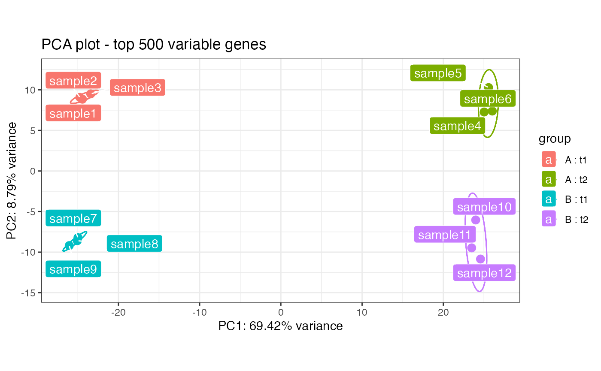
Launch the app for exploring this dataset with:
pcaExplorer(dds = dds_multifac,
dst = rld_multifac)When such a dataset is provided, the panel for multifactorial exploration is also usable at its best.
Functions exported by the package for standalone usage
The functions exported by the pcaExplorer package can be also used in a standalone scenario, provided the required objects are in the working environment. They are listed here for an overview, but please refer to the documentation for additional details. Where possible, for each function a code snippet will be provided for its typical usage.
pcaplot
pcaplot plots the sample PCA for DESeqTransform objects, such as rlog-transformed data. This is the workhorse of the Samples View tab.
pcaplot(rld_airway,intgroup = c("cell","dex"),ntop = 1000,
pcX = 1, pcY = 2, title = "airway dataset PCA on samples - PC1 vs PC2")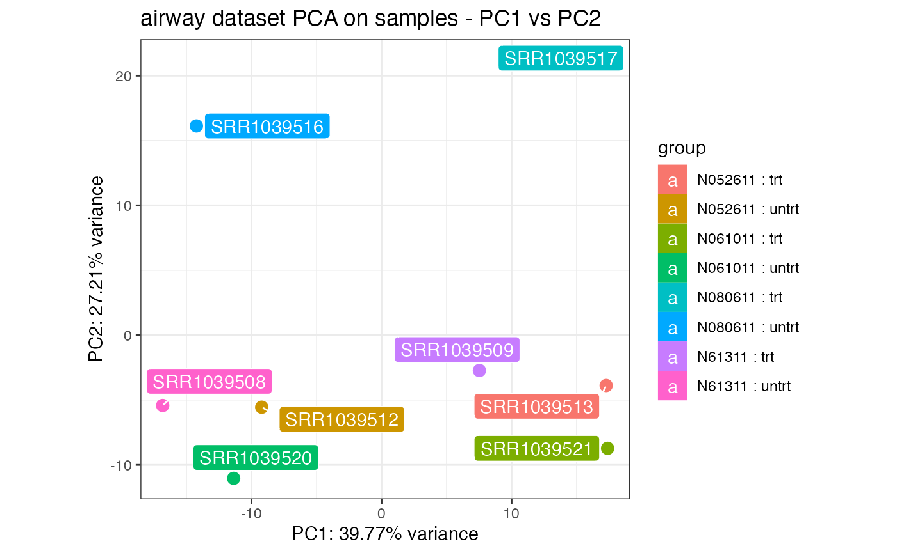
# on a different set of principal components...
pcaplot(rld_airway,intgroup = c("dex"),ntop = 1000,
pcX = 1, pcY = 4, title = "airway dataset PCA on samples - PC1 vs PC4",
ellipse = TRUE)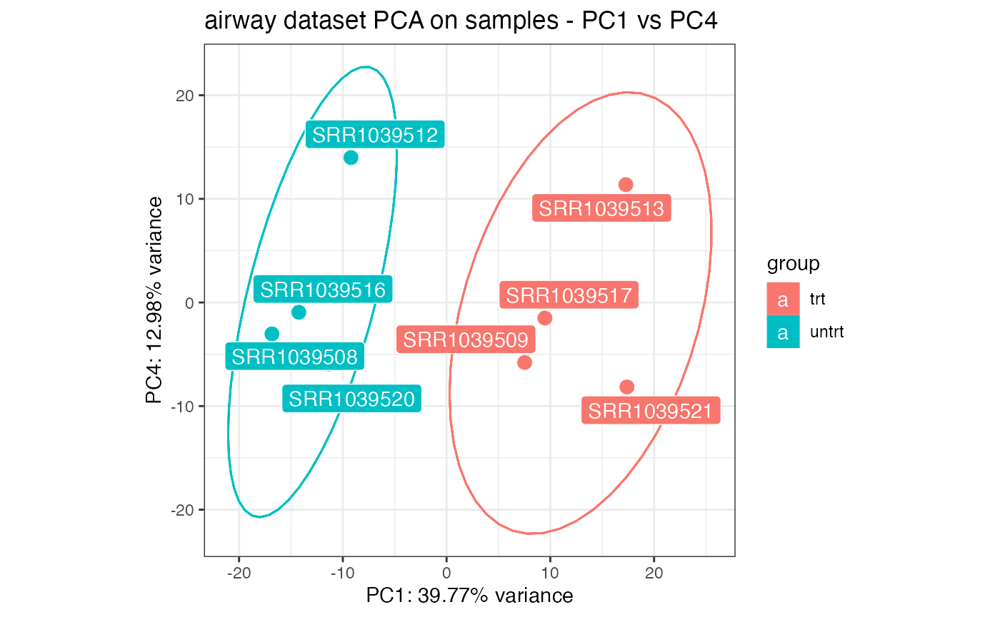
pcascree
pcascree produces a scree plot of the PC computed on the samples. A prcomp object needs to be passed as main argument.
pcaobj_airway <- prcomp(t(assay(rld_airway)))
pcascree(pcaobj_airway,type="pev",
title="Proportion of explained proportion of variance - airway dataset")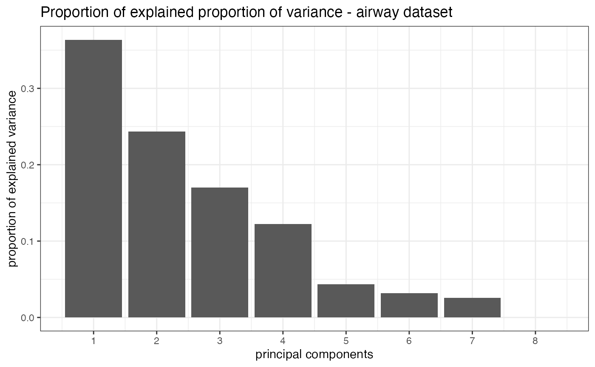
correlatePCs and plotPCcorrs
correlatePCs and plotPCcorrs respectively compute and plot significance of the (cor)relation of each covariate versus a principal component. The input for correlatePCs is a prcomp object.
res_pcairway <- correlatePCs(pcaobj_airway,colData(dds_airway))
res_pcairway SampleName cell dex albut Run avgLength Experiment
PC_1 0.4288799 0.68227033 0.02092134 NA 0.4288799 0.2554109 0.4288799
PC_2 0.4288799 0.11161023 0.56370286 NA 0.4288799 0.1993592 0.4288799
PC_3 0.4288799 0.10377716 0.38647623 NA 0.4288799 0.1864725 0.4288799
PC_4 0.4288799 0.08331631 0.56370286 NA 0.4288799 0.4635148 0.4288799
Sample BioSample
PC_1 0.4288799 0.4288799
PC_2 0.4288799 0.4288799
PC_3 0.4288799 0.4288799
PC_4 0.4288799 0.4288799
plotPCcorrs(res_pcairway)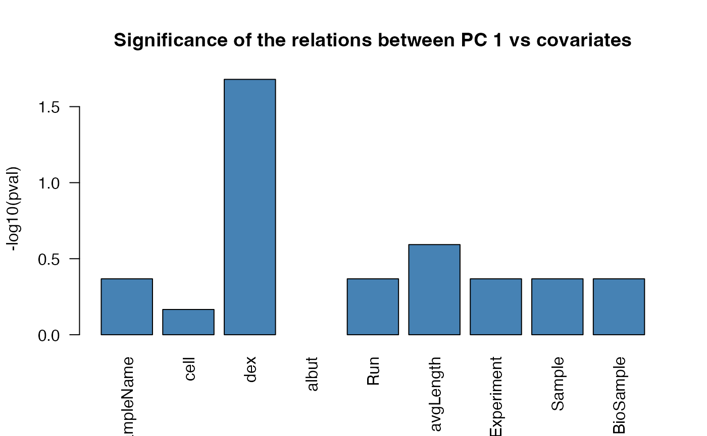
hi_loadings
hi_loadings extracts and optionally plots the genes with the highest loadings.
# extract the table of the genes with high loadings
hi_loadings(pcaobj_airway,topN = 10,exprTable=counts(dds_airway)) SRR1039508 SRR1039509 SRR1039512 SRR1039513 SRR1039516
ENSG00000143127 11 108 24 485 41
ENSG00000168309 12 274 35 451 1
ENSG00000101347 1632 17126 2098 19694 1598
ENSG00000211445 916 15749 3142 24057 1627
ENSG00000096060 260 4652 381 3875 601
ENSG00000163884 70 1325 52 702 36
ENSG00000171819 4 50 19 543 1
ENSG00000127954 13 247 25 889 2
ENSG00000152583 62 2040 99 1172 100
ENSG00000109906 4 739 5 429 1
ENSG00000162692 914 62 1192 55 1359
ENSG00000178695 4746 830 4805 414 5321
ENSG00000214814 312 24 193 28 501
ENSG00000164742 1506 347 275 14 137
ENSG00000138316 1327 207 1521 118 1962
ENSG00000123610 444 136 303 36 1170
ENSG00000124766 2483 406 2057 185 2829
ENSG00000105989 562 47 1575 106 106
ENSG00000013293 268 23 435 56 558
ENSG00000146250 330 41 907 89 720
SRR1039517 SRR1039520 SRR1039521
ENSG00000143127 607 77 660
ENSG00000168309 65 4 193
ENSG00000101347 17697 1683 32036
ENSG00000211445 16274 1741 24883
ENSG00000096060 5493 154 4118
ENSG00000163884 487 34 1355
ENSG00000171819 10 14 1067
ENSG00000127954 199 20 462
ENSG00000152583 1924 79 2138
ENSG00000109906 581 12 1113
ENSG00000162692 171 646 31
ENSG00000178695 1391 4411 606
ENSG00000214814 65 789 76
ENSG00000164742 37 475 56
ENSG00000138316 618 1045 152
ENSG00000123610 195 473 37
ENSG00000124766 870 1851 301
ENSG00000105989 24 382 46
ENSG00000013293 75 562 74
ENSG00000146250 123 439 60
# or alternatively plot the values
hi_loadings(pcaobj_airway,topN = 10,annotation = annotation_airway)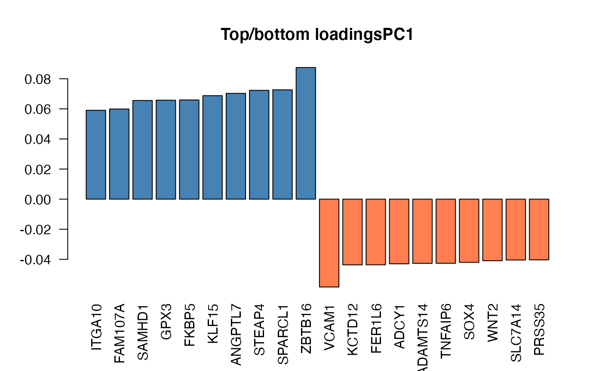
genespca
genespca computes and plots the principal components of the genes, eventually displaying the samples as in a typical biplot visualization. This is the function in action for the Genes View tab.
groups_airway <- colData(dds_airway)$dex
cols_airway <- scales::hue_pal()(2)[groups_airway]
# with many genes, do not plot the labels of the genes
genespca(rld_airway,ntop=5000,
choices = c(1,2),
arrowColors=cols_airway,groupNames=groups_airway,
alpha = 0.2,
useRownamesAsLabels=FALSE,
varname.size = 5
)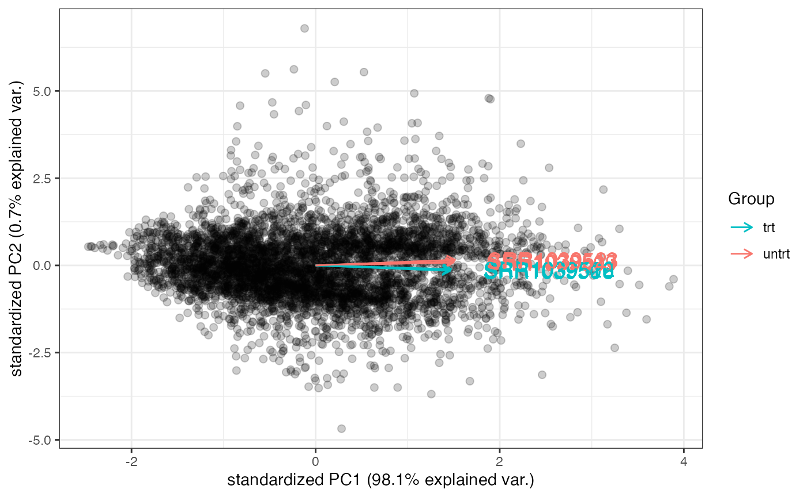
# with a smaller number of genes, plot gene names included in the annotation
genespca(rld_airway,ntop=100,
choices = c(1,2),
arrowColors=cols_airway,groupNames=groups_airway,
alpha = 0.7,
varname.size = 5,
annotation = annotation_airway
)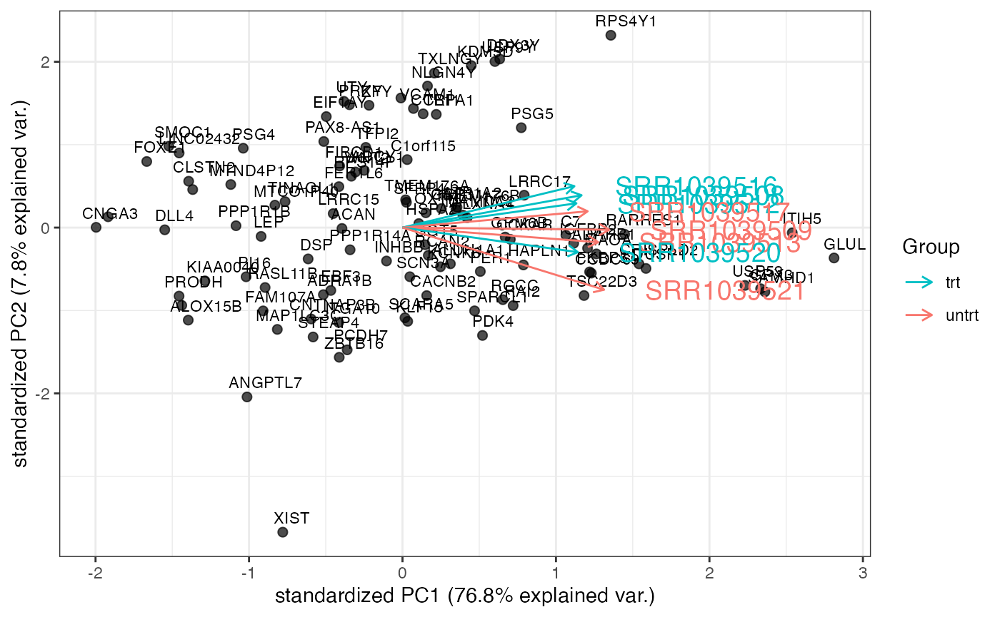
topGOtable
topGOtable is a convenient wrapper for extracting functional GO terms enriched in a subset of genes (such as the differentially expressed genes), based on the algorithm and the implementation in the topGO package.
# example not run due to quite long runtime
dds_airway <- DESeq(dds_airway)
res_airway <- results(dds_airway)
res_airway$symbol <- mapIds(org.Hs.eg.db,
keys=row.names(res_airway),
column="SYMBOL",
keytype="ENSEMBL",
multiVals="first")
res_airway$entrez <- mapIds(org.Hs.eg.db,
keys=row.names(res_airway),
column="ENTREZID",
keytype="ENSEMBL",
multiVals="first")
resOrdered <- as.data.frame(res_airway[order(res_airway$padj),])
head(resOrdered)
# extract DE genes
de_df <- resOrdered[resOrdered$padj < .05 & !is.na(resOrdered$padj),]
de_symbols <- de_df$symbol
# extract background genes
bg_ids <- rownames(dds_airway)[rowSums(counts(dds_airway)) > 0]
bg_symbols <- mapIds(org.Hs.eg.db,
keys=bg_ids,
column="SYMBOL",
keytype="ENSEMBL",
multiVals="first")
# run the function
topgoDE_airway <- topGOtable(de_symbols, bg_symbols,
ontology = "BP",
mapping = "org.Hs.eg.db",
geneID = "symbol")
pca2go
pca2go provides a functional interpretation of the principal components, by extracting the genes with the highest loadings for each PC, and then runs internally topGOtable on them for efficient functional enrichment analysis. This function requires a DESeqTransform object as main parameter.
pca2go_airway <- pca2go(rld_airway,
annotation = annotation_airway,
organism = "Hs",
ensToGeneSymbol = TRUE,
background_genes = bg_ids)
# for a smooth interactive exploration, use DT::datatable
datatable(pca2go_airway$PC1$posLoad)
# display it in the normal R session...
head(pca2go_airway$PC1$posLoad)
# ... or use it for running the app and display in the dedicated tab
pcaExplorer(dds_airway,rld_airway,
pca2go = pca2go_airway,
annotation = annotation_airway)
limmaquickpca2go
limmaquickpca2go is an alternative to pca2go, used in the live running app, thanks to its fast implementation based on the limma::goana function.
goquick_airway <- limmaquickpca2go(rld_airway,
pca_ngenes = 10000,
inputType = "ENSEMBL",
organism = "Hs")
# display it in the normal R session...
head(goquick_airway$PC1$posLoad)
# ... or use it for running the app and display in the dedicated tab
pcaExplorer(dds_airway,rld_airway,
pca2go = goquick_airway,
annotation = annotation_airway)
makeExampleDESeqDataSet_multifac
makeExampleDESeqDataSet_multifac constructs a simulated DESeqDataSet of Negative Binomial dataset from different conditions. The fold changes between the conditions can be adjusted with the betaSD_condition and betaSD_tissue arguments.
dds_simu <- makeExampleDESeqDataSet_multifac(betaSD_condition = 3,betaSD_tissue = 0.5)
dds_simuclass: DESeqDataSet
dim: 1000 12
metadata(1): version
assays(1): counts
rownames(1000): gene1 gene2 ... gene999 gene1000
rowData names(4): trueIntercept trueBeta_condition trueBeta_tissue
trueDisp
colnames(12): sample1 sample2 ... sample11 sample12
colData names(2): condition tissue
dds2_simu <- makeExampleDESeqDataSet_multifac(betaSD_condition = 0.5,betaSD_tissue = 2)
dds2_simuclass: DESeqDataSet
dim: 1000 12
metadata(1): version
assays(1): counts
rownames(1000): gene1 gene2 ... gene999 gene1000
rowData names(4): trueIntercept trueBeta_condition trueBeta_tissue
trueDisp
colnames(12): sample1 sample2 ... sample11 sample12
colData names(2): condition tissue
rld_simu <- rlogTransformation(dds_simu)
rld2_simu <- rlogTransformation(dds2_simu)
pcaplot(rld_simu,intgroup = c("condition","tissue")) +
ggplot2::ggtitle("Simulated data - Big condition effect, small tissue effect")
pcaplot(rld2_simu,intgroup = c("condition","tissue")) +
ggplot2::ggtitle("Simulated data - Small condition effect, bigger tissue effect")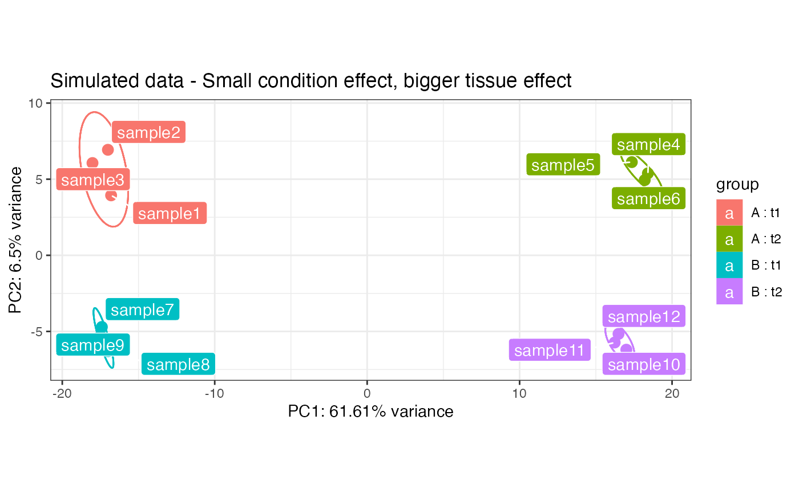
distro_expr
Plots the distribution of expression values, either with density lines, boxplots or violin plots.
distro_expr(rld_airway,plot_type = "density")
distro_expr(rld_airway,plot_type = "violin")
distro_expr(rld_airway,plot_type = "boxplot")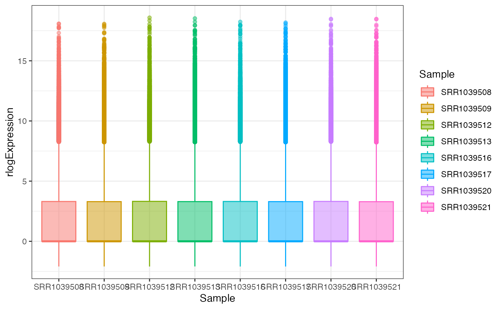
geneprofiler
Plots the profile expression of a subset of genes, optionally as standardized values.
dds <- makeExampleDESeqDataSet_multifac(betaSD_condition = 3,betaSD_tissue = 1)
dst <- DESeq2::rlogTransformation(dds)
set.seed(42)
geneprofiler(dst,paste0("gene",sample(1:1000,20)), plotZ = FALSE)you provided 20 unique identifiers
20 out of 20 provided genes were found in the data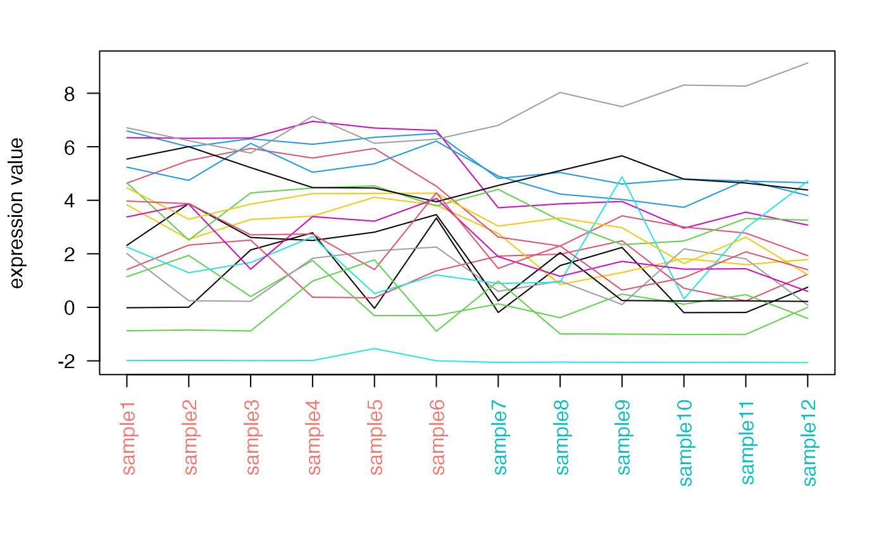
get_annotation and get_annotation_orgdb
These two wrapper functions retrieve the latest annotations for the dds object, to be used in the call to the pcaExplorer function. They use respectively the biomaRt package and the org.XX.eg.db packages.
anno_df_biomart <- get_annotation(dds = dds_airway,
biomart_dataset = "hsapiens_gene_ensembl",
idtype = "ensembl_gene_id")
anno_df_orgdb <- get_annotation_orgdb(dds = dds_airway,
orgdb_species = "org.Hs.eg.db",
idtype = "ENSEMBL")Further development
Additional functionality for the pcaExplorer will be added in the future, as it is tightly related to a topic under current development research.
Improvements, suggestions, bugs, issues and feedback of any type can be sent to marinif@uni-mainz.de.
Session info
R Under development (unstable) (2021-11-05 r81143)
Platform: x86_64-apple-darwin17.0 (64-bit)
Running under: macOS Catalina 10.15.7
Matrix products: default
BLAS: /Library/Frameworks/R.framework/Versions/4.2/Resources/lib/libRblas.0.dylib
LAPACK: /Library/Frameworks/R.framework/Versions/4.2/Resources/lib/libRlapack.dylib
locale:
[1] en_US.UTF-8/en_US.UTF-8/en_US.UTF-8/C/en_US.UTF-8/en_US.UTF-8
attached base packages:
[1] stats4 stats graphics grDevices utils datasets methods
[8] base
other attached packages:
[1] org.Hs.eg.db_3.14.0 AnnotationDbi_1.57.1
[3] DESeq2_1.35.0 airway_1.15.1
[5] SummarizedExperiment_1.25.2 GenomicRanges_1.47.3
[7] GenomeInfoDb_1.31.1 IRanges_2.29.0
[9] S4Vectors_0.33.0 MatrixGenerics_1.7.0
[11] matrixStats_0.61.0 pcaExplorer_2.21.0
[13] Biobase_2.55.0 BiocGenerics_0.41.1
[15] knitr_1.36 BiocStyle_2.23.0
loaded via a namespace (and not attached):
[1] GOstats_2.61.0 BiocFileCache_2.3.0 systemfonts_1.0.3
[4] NMF_0.23.0 plyr_1.8.6 igraph_1.2.7
[7] lazyeval_0.2.2 GSEABase_1.57.0 shinydashboard_0.7.2
[10] splines_4.2.0 BiocParallel_1.29.0 crosstalk_1.2.0
[13] ggplot2_3.3.5 gridBase_0.4-7 digest_0.6.28
[16] foreach_1.5.1 htmltools_0.5.2 viridis_0.6.2
[19] GO.db_3.14.0 fansi_0.5.0 magrittr_2.0.1
[22] memoise_2.0.0 cluster_2.1.2 doParallel_1.0.16
[25] limma_3.51.0 Biostrings_2.63.0 annotate_1.73.0
[28] pkgdown_1.9000.9000.9000 prettyunits_1.1.1 colorspace_2.0-2
[31] blob_1.2.2 rappdirs_0.3.3 ggrepel_0.9.1
[34] textshaping_0.3.6 xfun_0.28 dplyr_1.0.7
[37] crayon_1.4.2 RCurl_1.98-1.5 jsonlite_1.7.2
[40] graph_1.73.0 genefilter_1.77.0 survival_3.2-13
[43] iterators_1.0.13 glue_1.4.2 registry_0.5-1
[46] gtable_0.3.0 zlibbioc_1.41.0 XVector_0.35.0
[49] webshot_0.5.2 DelayedArray_0.21.1 Rgraphviz_2.39.0
[52] SparseM_1.81 scales_1.1.1 pheatmap_1.0.12
[55] DBI_1.1.1 rngtools_1.5.2 Rcpp_1.0.7
[58] viridisLite_0.4.0 xtable_1.8-4 progress_1.2.2
[61] bit_4.0.4 DT_0.19 AnnotationForge_1.37.0
[64] htmlwidgets_1.5.4 httr_1.4.2 threejs_0.3.3
[67] shinyAce_0.4.1 RColorBrewer_1.1-2 ellipsis_0.3.2
[70] farver_2.1.0 pkgconfig_2.0.3 XML_3.99-0.8
[73] sass_0.4.0 dbplyr_2.1.1 locfit_1.5-9.4
[76] utf8_1.2.2 labeling_0.4.2 tidyselect_1.1.1
[79] rlang_0.4.12 reshape2_1.4.4 later_1.3.0
[82] munsell_0.5.0 tools_4.2.0 cachem_1.0.6
[85] generics_0.1.1 RSQLite_2.2.8 shinyBS_0.61
[88] evaluate_0.14 stringr_1.4.0 fastmap_1.1.0
[91] heatmaply_1.3.0 yaml_2.2.1 ragg_1.2.0
[94] bit64_4.0.5 fs_1.5.0 purrr_0.3.4
[97] KEGGREST_1.35.0 dendextend_1.15.2 RBGL_1.71.0
[100] mime_0.12 xml2_1.3.2 biomaRt_2.51.0
[103] compiler_4.2.0 plotly_4.10.0 filelock_1.0.2
[106] curl_4.3.2 png_0.1-7 tibble_3.1.5
[109] geneplotter_1.73.0 bslib_0.3.1 stringi_1.7.5
[112] highr_0.9 desc_1.4.0 lattice_0.20-45
[115] Matrix_1.3-4 vctrs_0.3.8 pillar_1.6.4
[118] lifecycle_1.0.1 BiocManager_1.30.16 jquerylib_0.1.4
[121] data.table_1.14.2 bitops_1.0-7 seriation_1.3.1
[124] httpuv_1.6.3 R6_2.5.1 TSP_1.1-11
[127] bookdown_0.24 promises_1.2.0.1 topGO_2.47.0
[130] gridExtra_2.3 codetools_0.2-18 assertthat_0.2.1
[133] Category_2.61.0 pkgmaker_0.32.2 rprojroot_2.0.2
[136] withr_2.4.2 GenomeInfoDbData_1.2.7 parallel_4.2.0
[139] hms_1.1.1 grid_4.2.0 tidyr_1.1.4
[142] rmarkdown_2.11 shiny_1.7.1 base64enc_0.1-3